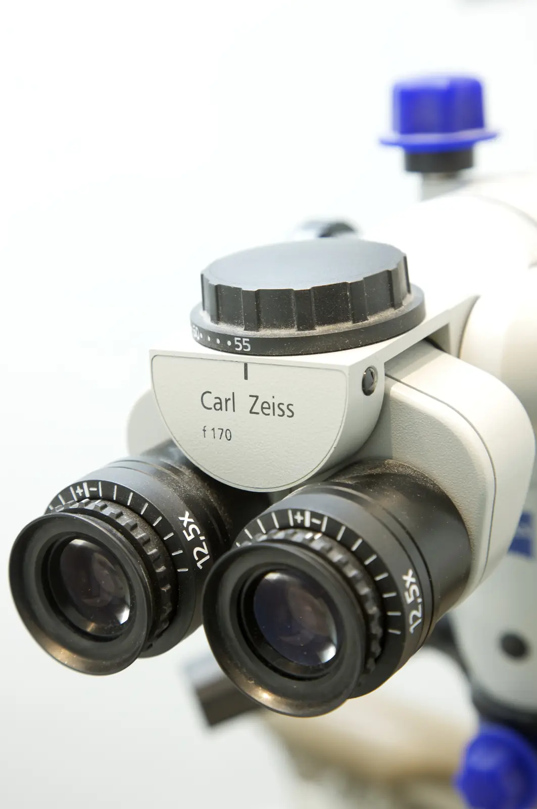

Le principe
Le microscope opératoire est un instrument optique qui agrandit et éclaire la zone de travail dans la bouche.
Il est monté sur un bras articulé au-dessus du fauteuil. Le praticien regarde à travers les oculaires, avec un grossissement réglable selon le geste. Un éclairage placé dans l’axe de la vision limite les zones d’ombre.

À quoi sert-il ?
- En endodontieRepérer des canaux très fins, retirer d’anciens matériaux d’obturation, déceler une fissure.
- En chirurgieRéaliser des gestes fins, par exemple lors d’une chirurgie endodontique.
- En prothèseContrôler la précision des préparations et l’ajustement des bords des couronnes.
Pour vous
Une meilleure visibilité permet des gestes plus précis et plus économes en tissu dentaire. Pour vous, rien ne change : vous êtes installé dans le fauteuil comme pour un soin habituel.